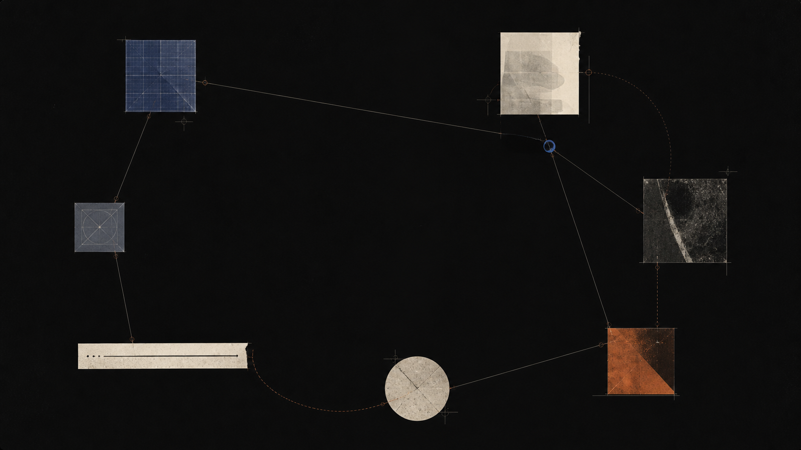
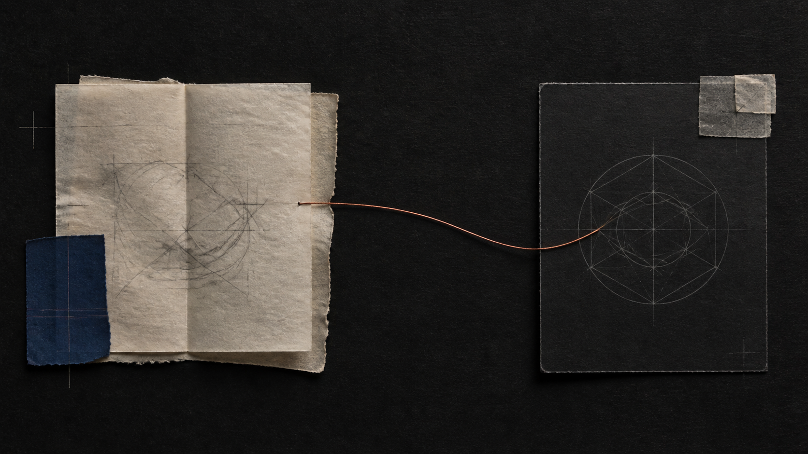

Memory
We test the small conditions that let an idea be recalled instead of merely recognized.
We study how explanation, retrieval, and reflection make difficult ideas available when they matter.
Research threads:MemoryExplanationPracticeKnowledge mappingTutoring
We test the small conditions that let an idea be recalled instead of merely recognized.
We examine what changes when a learner has to make the shape of an idea clear in their own words.
We explore the rhythms of return, productive difficulty, and a pause that gives thinking room.
We study how a visible path through a subject helps learners find the next useful connection.
We design AI guidance that stays curious about what a learner means, not just what they answer.

A study of why a changed prompt can surface a concept more reliably than a repeated answer.
Making an idea teachable exposes the part that still needs a smaller case or another question.
Why a moment of uncertainty can give an intelligent tutor better material to work with.
A changed prompt can surface a concept more reliably than a repeated answer. We ran a six-week intervention to understand why.
 Open publication →
Open publication →Asking a learner to teach an idea back reveals the seam where the next useful question belongs.

Open publication →A moment of explicit uncertainty is often followed by a sharper question than a moment of fluent confidence.
 Open publication →
Open publication →A useful knowledge map shows not only what a learner knows, but how the idea was assembled and where to walk next.
We asked 47 learners which moments they still remembered a week later. The answers changed how we end a session.
On the conditions under which a model admitting uncertainty is more useful than a fluent guess.
 Open publication →
Open publication →No publications matched that search.
2026
See moreOur work begins with a modest question: what would make this idea easier to return to tomorrow?
We publish methods, prototypes, and working notes so the answers can be useful to learners, teachers, and anyone building a more durable way to think.